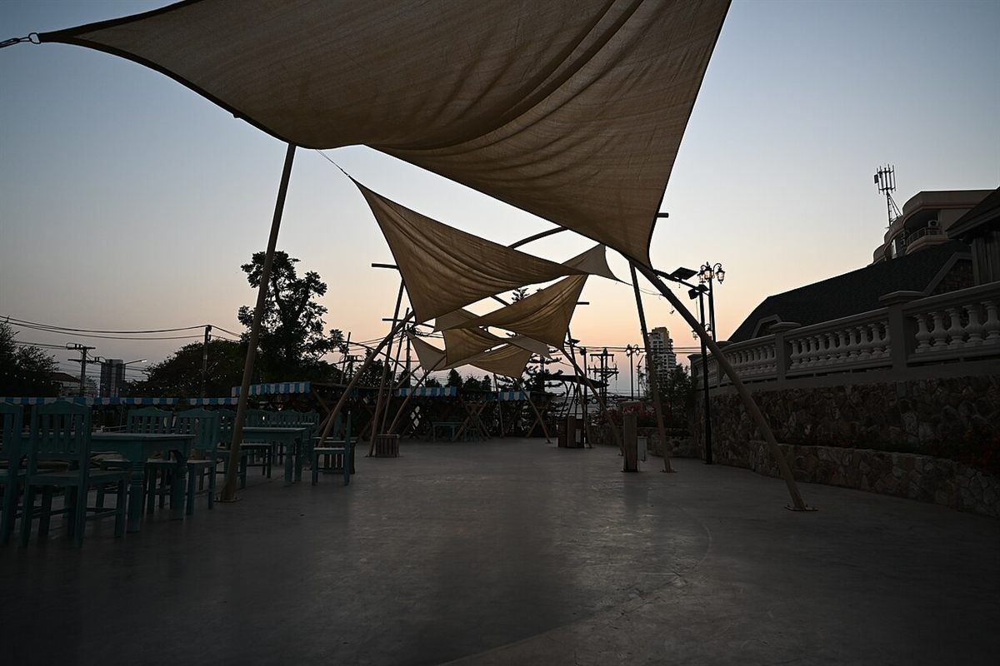
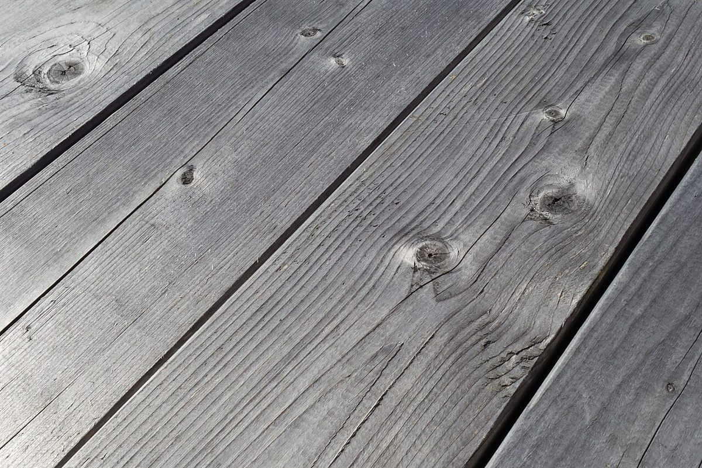
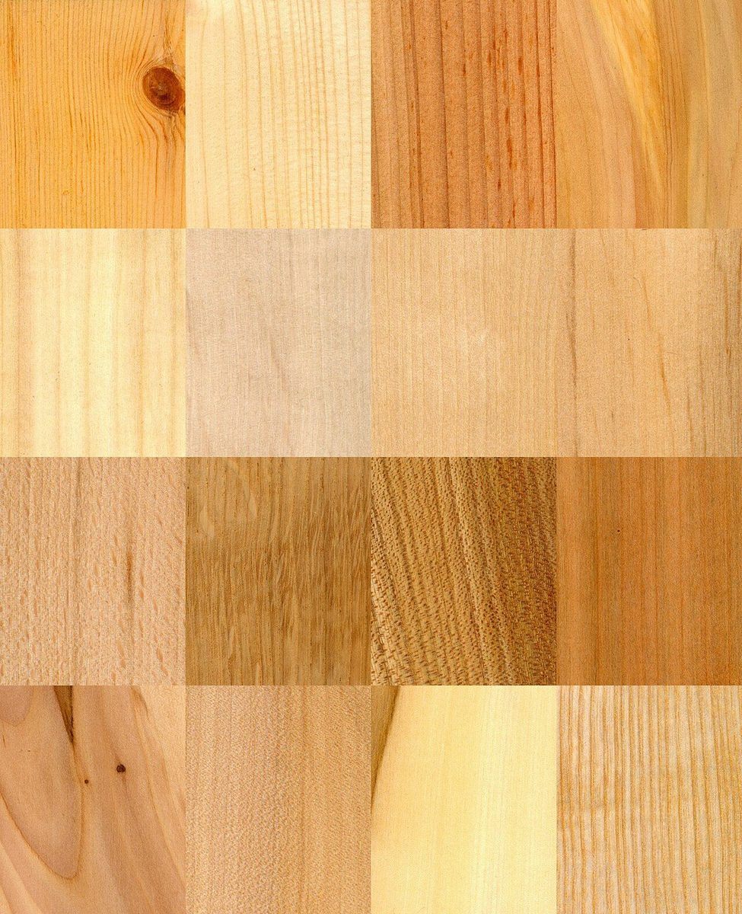

この説明書について
屋号の「TERRACE」から、制作側が「組み立て式の家具に付いてくる取扱説明書」を連想して、この試作ページを説明書の体裁で作りました。制作側の連想で、お店の理念・由来とは無関係です。お店が家具を扱っている、テラス席がある、といった意味でもありません。
PARTS LIST
部品表(写真はイメージ)
A〜Hは雰囲気を伝えるためのフリー素材です。お店のものではなく、国外または撮影地不明の写真です。






CHECK
お店のこと(確認できたものだけ)
| 所在地 | 〒275-0002 千葉県習志野市実籾4丁目14-9 |
|---|---|
| 電話 | なし |
| 営業時間 | 準備中 |
| 定休日 | 準備中 |
| ご予約 | 準備中 |
| 駐車場 | 準備中 |
| SNS | Instagram @mimomi_terrace |